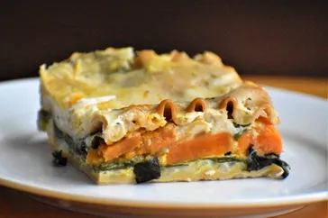

Lasagna

Butternut Squash Lasagna
This butternut squash lasagna makes a satisfying vegetarian dinner any day of the week.
It can take a while to put together, but it's always worth it!
Ingredients
- 1 butternut squash, halved and seeded
- 1 (8 ounce) package sliced fresh mushrooms
- 1 teaspoon minced garlic
- 1 onion, chopped
- 1 (10 ounce) package frozen chopped spinach, thawed and drained
- 7 cups milk, divided
- ½ cup cornstarch
- ...
Steps
- Preheat the oven to 450 degrees F (230 degrees C). Line a baking sheet with aluminum foil.
- Place squash, cut-side up, on the prepared baking sheet. Cover squash with aluminum foil.
- Bake in the preheated oven until squash is tender, 45 minutes to 1 hour 15 minutes.
- Heat 1 1/2 teaspoons olive oil in a skillet over medium heat; cook and stir mushrooms
and garlic in the
hot oil until mushrooms are tender, 5 to 10 minutes. Remove skillet from heat.
- ...